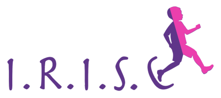
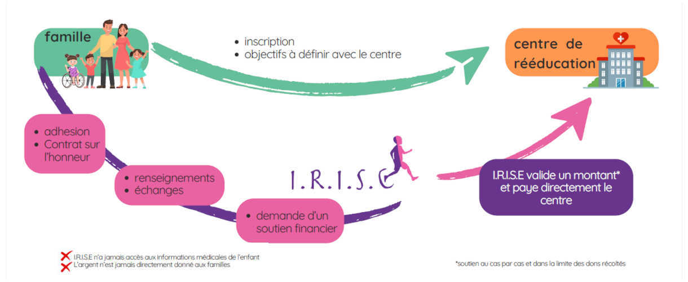
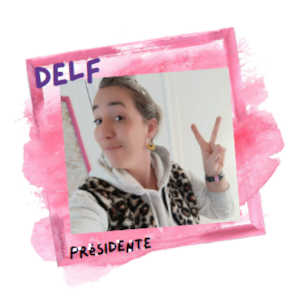
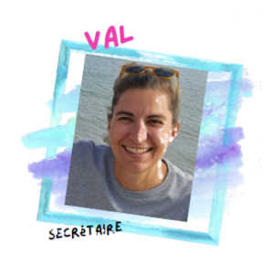
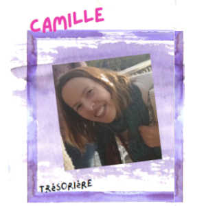
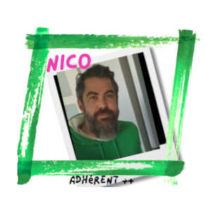

 Innover dans la Rééducation Inclusive et Solidaire pour les Enfants
Actualités
Qui sommes-nous ?
Notre association
L’association I.R.I.S.E. aide les enfants atteints de troubles d’acquisition de la fonction motrice, sensorielle, cognitive, du langage et trouble de la relation.
I.R.I.S.E
Association à but non lucratif
créée en novembre 2023
Notre motivation
Notre motivation principale est de donner la possibilité aux enfants polyhandicapés de progresser, de dépasser une ou plusieurs parties de leur handicap et en conséquence gagner en autonomie et en confort.
Notre vision
Que chaque enfant présentant un polyhandicap ait l'opportunité de bénéficier de toutes les aides possibles pour se rééduquer.
Notre mission
Notre association a choisi de soutenir les stages intensifs pour permettre à un enfant
polyhandicapé de progresser. Le polyhandicap se définit comme un handicap grave à
expressions multiples associant toujours une déficience motrice et une déficience
cognitive, entraînant une restriction extrême de l'autonomie et des possibilités de
perception, d'expression et de relation.
Notre mission consiste à :
- Informer les familles concernées sur les différents centres situés en France et à l’étranger qui proposent ce type de stages - nous les informons sur les échelles de prix, les méthodes et technologies utilisées, les retours d’expériences,...
- Apporter un soutien financier (grâce à des partenariats et des dons) pour la prise en charge des stages qui dans 80% des cas ne sont pas remboursés par la sécurité sociale.
Les stages de rééducation intensive
Les stages pluridisciplinaires visent à améliorer les capacités motrices, cognitives et sensorielles des enfants grâce à des exercices ludiques et stimulants.
Encadrement par des professionnels de santé (kinésithérapeutes, ergothérapeutes, orthophonistes, médecins...).
Durée entre 1 à 4 semaines,
environ 5h par jour.
Objectifs fixés avec les parents et adaptés aux soins spécifiques de l’enfant.
Développement et réorganisation
Ces stages offrent des méthodes innovantes pour aider les enfants à développer leur potentiel et leur autonomie.
Ils sont basés sur les principes de la neuroplasticité, c’est-à-dire la capacité du cerveau à se réorganiser et à créer de nouvelles connexions en fonction des stimulations reçues.
Qui est concerné ?
Aujourd’hui, l’association I.R.I.S.E s’adresse aux enfants :
- âgés de 3 à 10 ans ;
- domiciliés en Pays de la Loire et en Bretagne.
Nos actions
Nous travaillons avec les familles et les centres de rééducation.
- La famille adhère et signe un contrat d'honneur avec l'assocation I.R.I.S.E.
- Suite à des échanges entre la famille et l'association, l'association fournit des renseignements à la famille.
- La famille demande un soutien financier à l'assocation et s'inscrit auprès du centre de rééducation. (La famille et le centre de rééducation ont défini ensemble des objectifs à atteindre.)
- L'assocation I.R.I.S.E. valide un montant(*) et paye directement le centre de rééducation.
Soutien au cas par cas et dans la limite des dons récoltés.
- L'assocation I.R.I.S.E. n’a jamais accès aux informations médicales de l’enfant.
- L’argent n’est jamais directement donné aux familles.
Combien coûte un stage ?
| Nantes 1600€ | Pologne 4000€ | Espagne 3500€ | |
|---|---|---|---|
| Durée | 1 à 2 semaines | 2 semaines | 2 semaines |
| Remboursé par la sécu | 1 séance d'osthéo + 1 partie de la kiné |
Non | Non |
| Hébergement | AirB&B environ 200€ | Inclus | AirB&B environ 1500€ |
| Repas | Non | Inclus | Non |
| Transport | Non | Avion + taxi environ 600€ | Avion + voiture environ 400€ |
| Les plus | Local = accessibilité + prix | Nouvelles technologies Méthodes innovantes Tout est inclus |
Nouvelles technologies Intensité des exercices Activités neuro et moteurs |
Ce qu'en disent les parents
JérémyNous nous rendons dans plusieurs centres, car ils apportent des compétences et des méthodes différentes.
CarolineDans les centres à l’étranger nous avons accès à du matériel comme le lokomat, table vibrante, attelles, calci boots, etc que nous trouvons très bénéfique pour notre enfant.
ÉlianeCe que j’aime en Pologne, c’est le « all inclusive !! » : tout trouver au même endroit et avoir une rééducation globale avec des thérapeutes enthousiastes et professionnels !
BlandineL’intensité - aussi bien dans la durée de la séance que du nombre de séances - c’est ce qui fait progresser nos enfants.
WalidCes centres privilégient l'autonomie de l’enfant.
5 stages financés !
En 6 mois ce sont déjà 5 stages qui ont été partiellement financés par l’association I.R.I.S.E.
Faire un don
Faire un don à l'association I.R.I.S.E., c'est :
- Participer concrètement au neuro-développement d’un enfant.
- 100 % de vos dons redistribués aux enfants pour leur participation à un stage.
- 66% du montant de votre don déduits de vos impôts.
Comment donner ?
Rendez-vous sur notre page I.R.I.S.E. sur le site helloasso.com et sélectionnez
« Faire un don » au bas de la page.
À la fin de transaction vous recevrez
une confirmation par email avec votre justificatif fiscal.
On vous donne des nouvelles
Dans les 3 mois suivant votre don, nous vous écrirons pour vous informer comment votre argent a contribué à la rééducation et à l'acquisition de nouvelles compétences des enfants d'I.R.I.S.E.
Contactez-nous !
L'équipe
   Coordonnées
- Adresse
- 3 Rue des Hirondelles
44230 Saint-Sébastien-sur-Loire - Courriel
- Téléphone
- 06 01 02 03 04